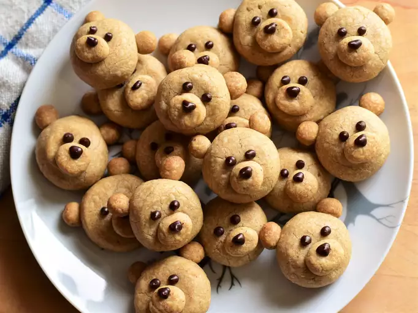

Brown Butter-Maple Shortbread Bear Cookies Recipe

These shortbread cookies are not too sweet, but full of flavor thanks to brown butter and maple syrup. They make an adorable (and tasty) addition to any cookie platter!
Ingredients
- ½ cup unsalted butter
- ¼ cup pure maple syrup
- 2 tablespoons packed dark brown sugar
- 1 teaspoon vanilla extract
- 1 teaspoon maple extract
- ½ teaspoon ground cinnamon
- ¼ teaspoon ground nutmeg
- ¼ teaspoon salt
- 1 ¼ cups all-purpose flour
- ¼ teaspoon baking powder
- 1 tablespoon chocolate chips, or as needed
Steps
- Place butter into a small light-colored saucepan over medium heat. Cook, swirling often, until small brown bits begin to stick to the bottom of the pan and the butter smells nutty, 8 to 10 minutes. Pour butter into a mixing bowl and allow to cool for 5 minutes.
- Add maple syrup and brown sugar to butter and stir to combine. Mix in vanilla extract, maple extract, cinnamon, nutmeg, and salt until combined. Add in flour and baking powder and mix until a smooth dough forms. Cover and place into the fridge for at least 2 hours.
- Line a baking sheet with parchment paper.
- Remove dough from fridge. Scoop out 1 tablespoon of dough and roll into a ball; place onto cookie sheet and flatten slightly. Scoop out 1/4 teaspoon of dough and roll into a small ball, then flatten into a circle shape; place on top of the 1 tablespoon ball of dough to form the 'snout' of the bear. Scoop out two 1/8 teaspoons of dough and roll into tiny balls; place on each side of the top of the cookie to make the ears. Set bear cookie on the prepared baking sheet. Continue rolling out and forming bear shapes until dough is used up. Space bear cookies about 1 inch apart on the baking sheet. Chill baking sheet into fridge for 20 minutes to allow cookies to firm up.
- Preheat the oven to 325 degrees F (165 degrees C).
- Remove baking sheet from fridge and place into the preheated oven. Bake until cookies are slightly browned on the bottom, 20 to 23 minutes. Allow cookies to cool on the sheet for a few minutes before removing to a wire rack to cool completely.
- Place chocolate chips into a small microwave-safe bowl or measuring cup and heat until melted, about 1 minute; stopping to stir every 30 seconds. Pour melted chocolate into a piping bag or a freezer bag, and snip a small hole on one of the corners. Pipe eyes and noses on the cookies. Allow chocolate to harden before serving. Keep extra cookies stored in an air-tight container.